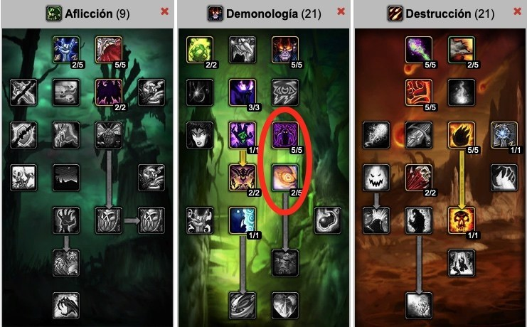

<h1> Este es un sitio web para Github Pages </h1>
<p> Para el articulo de git y github básico </p>
<p></p>
<h2>especialidad del brujo</h2>
<h3>Demonologia</h3>
<a href="https://medium.com/@padronjosef/entiende-git-y-github-de-una-vez-f24178ecaf1c">Guia de padron</a>